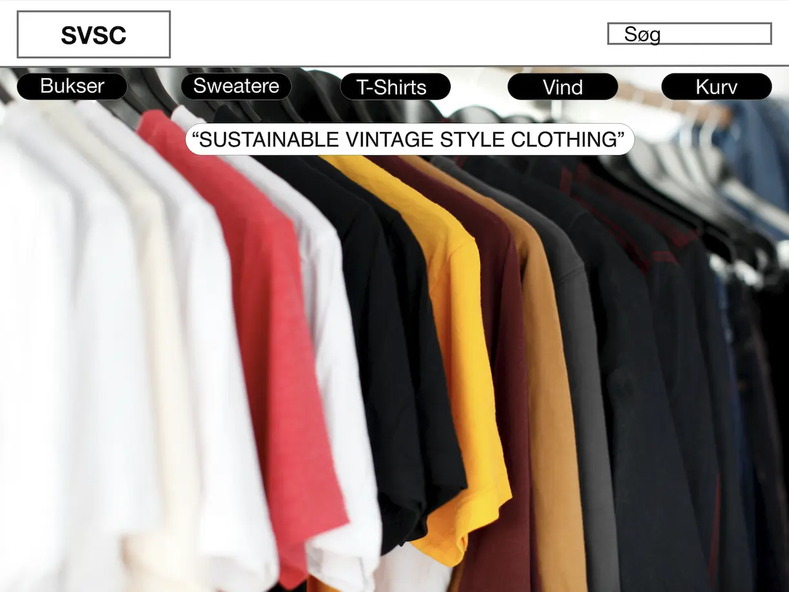
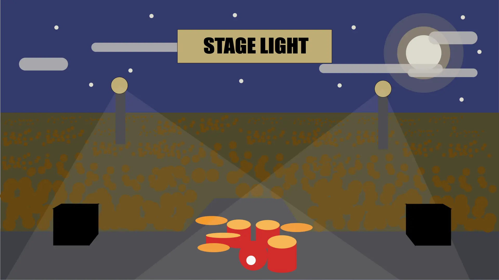
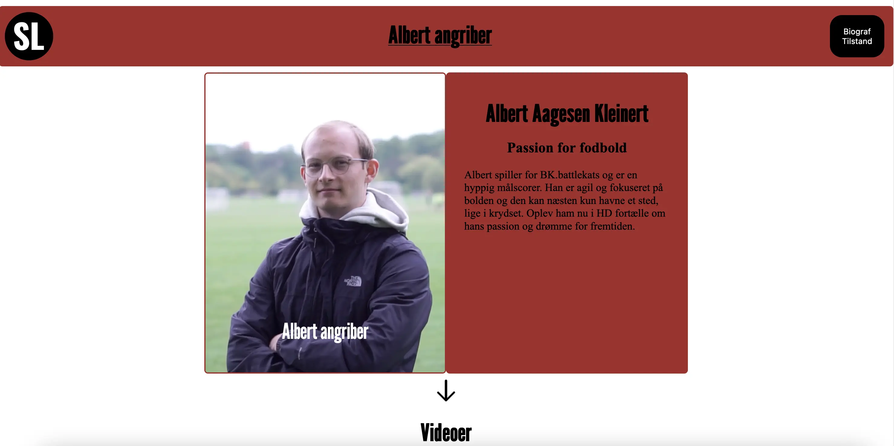

Portfolio
Om mig
Velkommen til min portfolio
Silas List
Mine opgaver
Tema 2
Responsive_v2
Tema 3

Prototype 2
UX Pitch Deck
Tema 4

Animation
Tema 5

Pilotsite
Redesign

 UX Pitch Deck
UX Pitch Deck
 Redesign
Redesign
 UX Pitch Deck
Redesign
UX Pitch Deck
Redesign